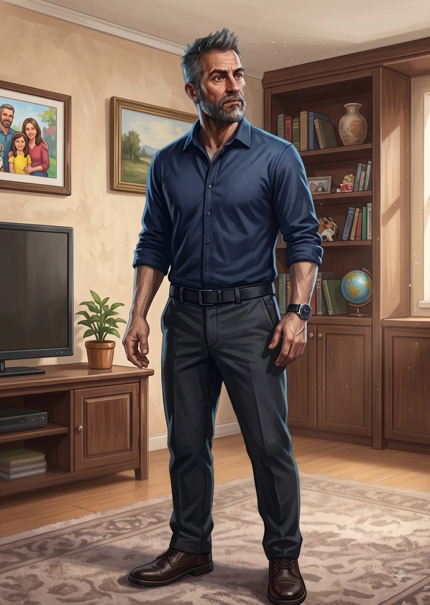
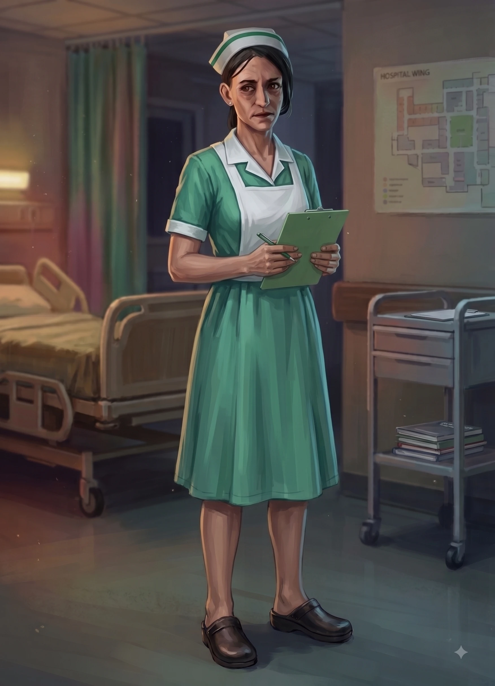
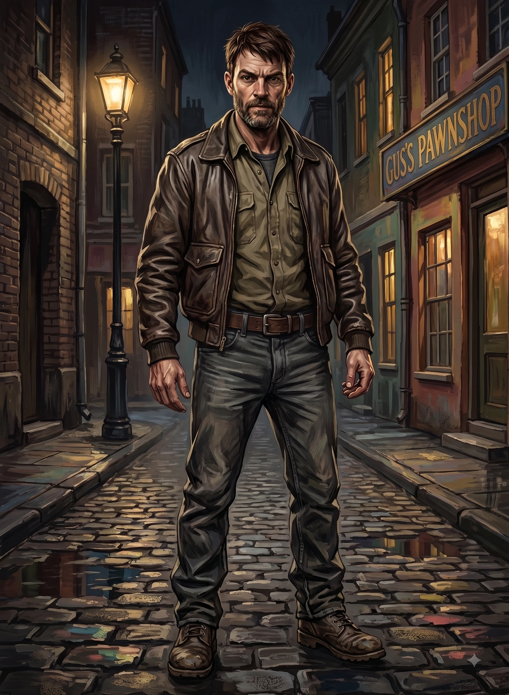
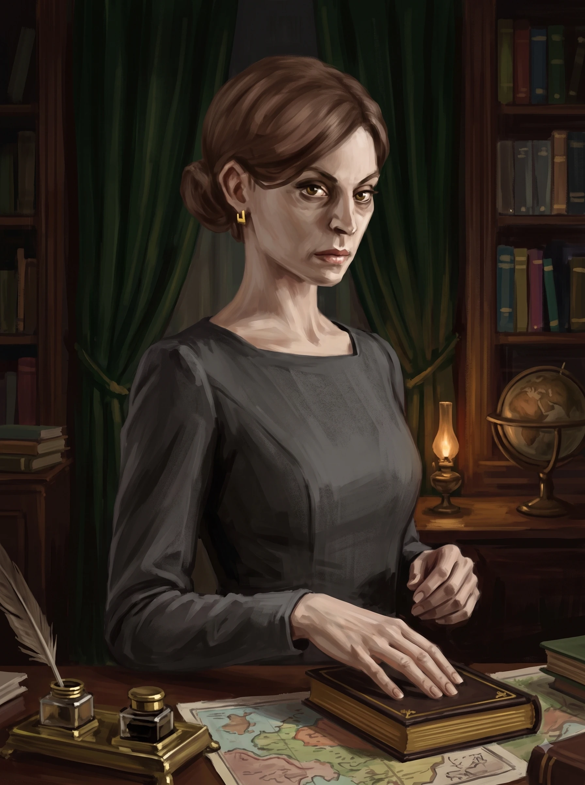
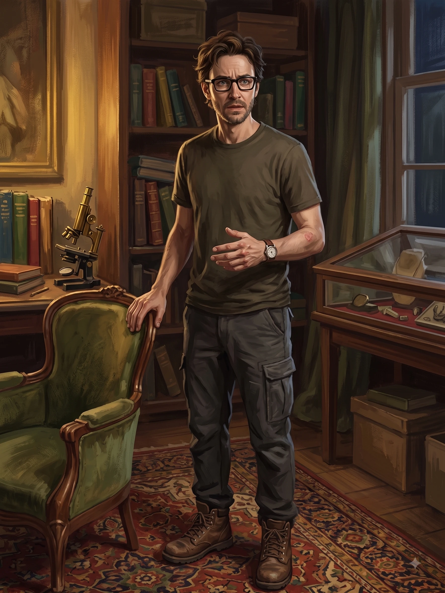

웨이드 보틀러
54세 / 보안 컨설턴트보안 컨설턴트. 3주 전에 자이메드바이오로부터 "위험하고 불만을 품은 전직 직원"으로 여겨지는 한 인물을 감시해 달라는 의뢰를 받았습니다. 그는 해당 인물을 "추가 심문"을 위해 회사 시설로 데려오라는 명령을 받았습니다. 보틀러는 타깃을 지켜보고 기회가 된다면 자이메드바이오 사무실로 함께 가자고 설득하기 위해 척 오글의 파티에 무단으로 참석할 계획입니다.
마리나 콜가
29세 / 변호사변호사. 자이메드 바이오 회사의 "테스트 프로그램" 참여를 거부했다가 한 달 전에 해고 당했습니다. 콜가는 자이메드바이오로부터 부당한 대우를 받았다고 느끼며 의구심이 커져 가고 있습니다. 척 오글은 이웃이며, 콜가는 그가 회사의 임상 시험 참가자 중 한 명이었다는 사실을 알고 있습니다(자이메드바이오 재직 당시 그의 서류를 처리했기 때문입니다). 콜가는 약물 임상 시험에 대해 알아낼 것이 있는지 확인하고자 스스로 파티에 찾아갈 계획입니다.

메리 풀러
44세 / 간호사공인 간호사이자 척 오글의 사촌. 풀러는 오글이 성인 발병 당뇨병으로 심하게 앓아왔다는 사실을 알고 있습니다. 자이메드바이오의 실험적 치료에도 불구하고, 이번 파티가 척이 죽기 전 작별 인사를 나누는 자리라고 믿고 있습니다. 풀러는 지인의 소개로 알게 된 한 사람을 데이트 상대로 삼아 파티에 함께 동행합니다.

거스 필립스
42세 / 경찰관경찰관. 최근 자이메드바이오 주차장에서 발생한 폭행 사건을 조사하던 중, 말기 췌장암에서 기적적으로 완치되어 복귀한 서장에 의해 사건이 강제 종결되고 내근직으로 밀려났습니다. 자이메드바이오에 강한 의구심을 품은 필립스는, 그곳에서 치료를 받은 적이 있다는 환자의 파티 소식을 듣고 지인을 통해 알게 된 여성의 데이트 상대 자격으로 파티에 잠입합니다.

벨린다 노리치
42세 / 의사겸상 적혈구 빈혈증(SCD) 연구에 종사하는 의사. 자신의 불치병 환자가 자이메드바이오의 치료를 받고 완치되었다며 나타나자 의학적 의구심을 품게 되었습니다. 근무하는 병원의 한 동료를 통해 척 오글의 치료와 파티 소식을 전해 들은 노리치는, 치료의 실체를 파헤치기 위해 파티에 무단으로 참석하기로 결정했습니다.

엘리엇 클로슨
32세 / 저널리스트자이메드바이오를 조사하는 저널리스트. 에이즈로 투병하던 편집장이 그곳에서 치료를 받고 완전히 완치되어 돌아와 조사를 중단하라고 명령하자 깊은 의구심을 품게 됩니다. 취재 중 알게 되었던 환자 척 오글의 파티 초대장을 받은 클로슨은, 편집장의 지시를 거스르지 않으면서 진상을 캐내기 위해 파티에 참석합니다.